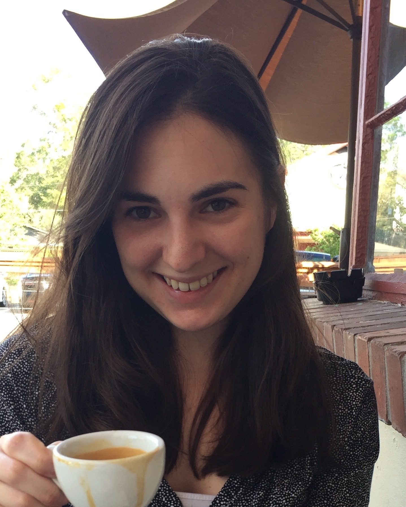

Celeste Vallejo

I am a postdoctoral fellow at the Mathematical Biosciences Institute at the Ohio State University. This position is co-sponsered by Battelle Memorial Institute.The theme of my research is implementing stochastic simulation models to answer epidemiological questions. I have applied this technique to investigate the silent circulation of poliovirus in small populations using both a stochastic compartmental model and an event-driven individual-based model. As a co-sponsored post-doc with Battelle, I am a part of a team that is developing a model that will be used to improve patient outcomes in a hospital setting.